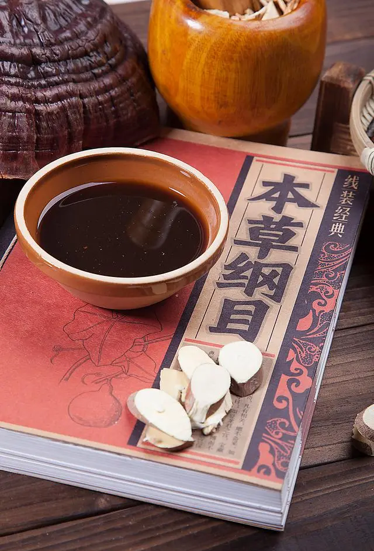

- 


中医是中国传统的医学体系，以阴阳五行为理论基础，通过望闻问切四诊合参的方法诊断疾病，并采用多种治疗手段如中药、针灸、推拿等来恢复人体的阴阳平衡。中医的历史可以追溯到原始社会，并在春秋战国时期形成了基本的理论框架。中医不仅在中国广泛使用，还对周边国家如日本、韩国、越南等地的医学发展产生了深远影响。
中医的理论基础包括阴阳五行学说，认为人体是一个气、形、神的统一体。通过分析人体的五脏六腑、经络关节、气血津液的变化，中医能够判断病因并制定相应的治疗策略。中医的治疗方法多样，包括中药、针灸、推拿、拔罐等，强调通过自然疗法来促进身体的自我恢复。
在国际上，世界卫生组织认可了中医的许多治疗方法，如针灸在减轻手术后疼痛、怀孕期反胃等方面的有效性。然而，对于一些传统疗法，还需要进一步的研究来验证其安全性和有效性。尽管如此，中医在现代医学体系中仍然占据重要地位，并且在许多国家得到了广泛应用。
望诊
观察病人形体、面色、舌体、舌苔，根据形色变化确定病位、病性，称为望诊。形体观其形体，可知五脏盛衰，轩岐早有论述。《素问·脉要精微论》云：“头者，精明之府，头倾视深，精神将夺矣！背者，胸中之府，背曲肩随，府将坏矣！腰者，肾之府，转摇不能，肾将惫矣！膝者，筋之府，屈伸不能，行则按俯，筋将惫矣！骨者，髓之府，不能久立，行则振掉，骨将惫矣！”脑为元神之府，肾精生化之髓充实其中，才能神光焕发，思维敏捷。苦头往前倾，目睛内陷，是髓海不足，元神将惫现象。背为胸廓，心肺居于胸中，背曲肩随，是心肺已虚象征。腰为肾脏所在部位，不能转摇，是肾脏功能衰惫的表现。
闻诊
闻诊包括听声音和嗅气味两方面：1、从病人发生的各种声音，从其高低、缓急、强弱、清浊测知病性的方法。①声音高亢：是正气未虚，属于热证、实证。②语声重浊：乃外感风寒，肺气不宣，肺津不布，气郁津凝，湿阻肺系会厌，声带变厚，以致声音重浊。2、嗅气味可分为病人身体的气味和病室内的气味。①病人说话有囗臭，多属消化不良、腐臭多属体内有溃疡。②病室内有尸臭气味，多属腑脏败坏。有烂苹果气味，多属消渴病（糖尿病）危重患者。
问诊
问诊是询问病人及其家属，了解现有证象及其病史，为辨证提供依据的一种方法。明代医家张景岳认为问诊“乃诊治之要领，临证之首务”。综观四诊所获证象，大半均由问诊得来，即知此言不谬。问诊范围甚广，我们仅将《景岳全书》所列十问加以增损进行研讨，余未备述。一问寒热二问汗，三问疼痛四问便，五问呕眩六问悸，七苦八渴俱当辨，九问旧病十问团，病机全从证象验。妇人尤必问经期，先后闭崩宜问遍，再添片语告儿科，外感食积为常见。
切诊
切诊是指用手触按病人身体，借此了解病情的一种方法。本节仅论切脉，余未备述。切脉又称诊脉，是医者用手指按其腕后挠动脉搏动处，借以体察脉象变化，辨别脏腑功能盛衰，气血津精虚滞的一种方法。正常脉象是寸、关、尺三部都有脉在搏动，不浮不沉，不迟不数，从容和缓，柔和有力，流利均匀，节律一致，一息搏动四至五次，谓之平脉。切脉辨证，早在《内经》、《难经》就有记载，经历三千年来的不断总结，对于何证出现何脉已有详细论述。但对证象与脉象间的内在联系，却无明析的概念，不能令人一目了然，以致学者只知其然而不知其所以然。脉证间的内在联系，如用一句话来概括，就是气血津液出现虚滞，五脏功能出现盛衰，才会出现不同脉证。只有弄清气血津液的生化输泄与五脏间的关系，才能将气血津液虚滞和五脏功能盛衰出现的证象与脉象联系起来，也才明白切脉能够察其五脏病变的道理所在。